VS Code 中的 Python 入门
在本教程中，你将学习如何在 Visual Studio Code 中使用 Python 3 来创建、运行和调试一个"掷骰子"Python 应用程序，使用虚拟环境、使用包等等！通过使用 Python 扩展，你可以将 VS Code 变成一个出色的轻量级 Python 编辑器。
如果你是编程新手，可以查看 Visual Studio Code for Education - Python 入门课程。该课程提供了全面的 Python 入门介绍，采用结构化模块和即用型浏览器开发环境。
要更深入地理解 Python 语言，你可以在 VS Code 环境中探索 python.org 上列出的任何编程教程。
有关以数据科学为重点的 Python 教程，请查看我们的数据科学部分。
前提条件
要成功完成本教程，你需要首先设置好 Python 开发环境。具体来说，本教程需要：
- Python 3
- VS Code
- VS Code Python 扩展（有关安装扩展的更多详细信息，请参见扩展市场）
安装 Python 解释器
除了 Python 扩展之外，你还需要安装一个 Python 解释器。使用哪个解释器取决于你的具体需求，下面提供了一些指导。
Windows
从 python.org 安装 Python。使用页面上第一个出现的 Download Python 按钮下载最新版本。
>注意：如果你没有管理员权限，在 Windows 上安装 Python 的另一种选择是使用 Microsoft Store。Microsoft Store 提供了受支持的 Python 版本的安装。
有关在 Windows 上使用 Python 的更多信息，请参见 Python.org 上的在 Windows 上使用 Python
macOS
不支持 macOS 上系统自带的 Python 安装。建议使用包管理系统，如 Homebrew。要在 macOS 上使用 Homebrew 安装 Python，请在终端提示符下使用 brew install python3。
注意：在 macOS 上，请确保你的 VS Code 安装位置包含在 PATH 环境变量中。更多信息请参见这些设置说明。
Linux
Linux 上内置的 Python 3 安装效果良好，但要安装其他 Python 包，你必须使用 get-pip.py 安装 pip。
其他选项
- 数据科学：如果你使用 Python 的主要目的是数据科学，那么你可以考虑从 Anaconda 下载。Anaconda 不仅提供 Python 解释器，还提供许多有用的数据科学库和工具。
- 适用于 Linux 的 Windows 子系统：如果你在 Windows 上工作，想要一个 Linux 环境来使用 Python，适用于 Linux 的 Windows 子系统（WSL）是一个可选方案。如果你选择此选项，你还需要安装 WSL 扩展。有关在 VS Code 中使用 WSL 的更多信息，请参见 VS Code 远程开发或尝试在 WSL 中工作教程，该教程将引导你完成 WSL 的设置、安装 Python 以及创建一个在 WSL 中运行的 Hello World 应用。
>注意：要验证你的机器上是否已成功安装 Python，请运行以下命令之一（取决于你的操作系统）：
>
>Linux/macOS：打开终端窗口，输入以下命令：
```bash
>python3 --version
>```
>Windows：打开命令提示符，运行以下命令：
>```bat
>py -3 --version
>```
>如果安装成功，输出窗口应显示你安装的 Python 版本。
>或者，你可以在 VS Code 集成终端中使用 py -0 命令来查看机器上安装的 Python 版本。默认解释器会用星号（*）标识。
在工作区文件夹中启动 VS Code
通过在文件夹中启动 VS Code，该文件夹将成为你的"工作区"。
使用命令提示符或终端，创建一个名为"hello"的空文件夹，导航到其中，然后通过输入以下命令在该文件夹（.）中打开 VS Code（code）：
mkdir hello
cd hello
code .>注意：如果你使用的是 Anaconda 发行版，请确保使用 Anaconda 命令提示符。
或者，你可以通过操作系统用户界面创建一个文件夹，然后使用 VS Code 的 文件 > 打开文件夹 来打开项目文件夹。
创建虚拟环境
Python 开发人员的最佳实践是使用项目特定的虚拟环境。一旦你激活该环境，你安装的任何包都将与其他环境（包括全局解释器环境）隔离开来，从而减少因包版本冲突而产生的许多复杂问题。你可以在 VS Code 中使用 Venv 或 Anaconda，通过 Python: 创建环境 来创建非全局环境。
打开命令面板（kb(workbench.action.showCommands)），开始输入 Python: 创建环境 命令进行搜索，然后选择该命令。
该命令会显示环境类型列表：Venv 或 Conda。在此示例中，选择 Venv。

然后该命令会显示可用于项目的解释器列表。选择你在本教程开始时安装的解释器。

选择解释器后，一条通知将显示环境创建的进度，环境文件夹（/.venv）将出现在你的工作区中。

通过从命令面板使用 Python: 选择解释器 命令，确保你的新环境已被选中。
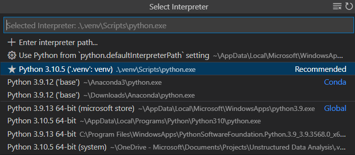
注意：有关虚拟环境的更多信息，或者如果你在环境创建过程中遇到错误，请参见环境。
创建 Python 源代码文件
在文件资源管理器工具栏中，选择 hello 文件夹上的新建文件按钮：
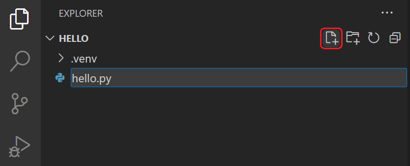
将文件命名为 hello.py，VS Code 将自动在编辑器中打开它：
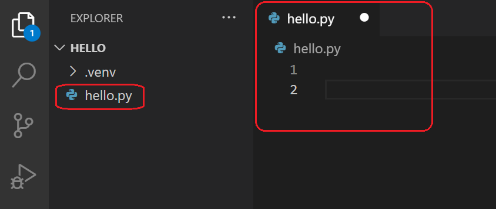
通过使用 .py 文件扩展名，你告诉 VS Code 将此文件解释为 Python 程序，以便它使用 Python 扩展和所选解释器来评估其内容。
>注意：文件资源管理器工具栏还允许你在工作区中创建文件夹，以更好地组织代码。你可以使用新建文件夹按钮快速创建文件夹。
现在你的工作区中有了一个代码文件，请在 hello.py 中输入以下源代码：
msg = "Roll a dice!"
print(msg)当你开始输入 print 时，请注意 IntelliSense 如何显示自动完成选项。
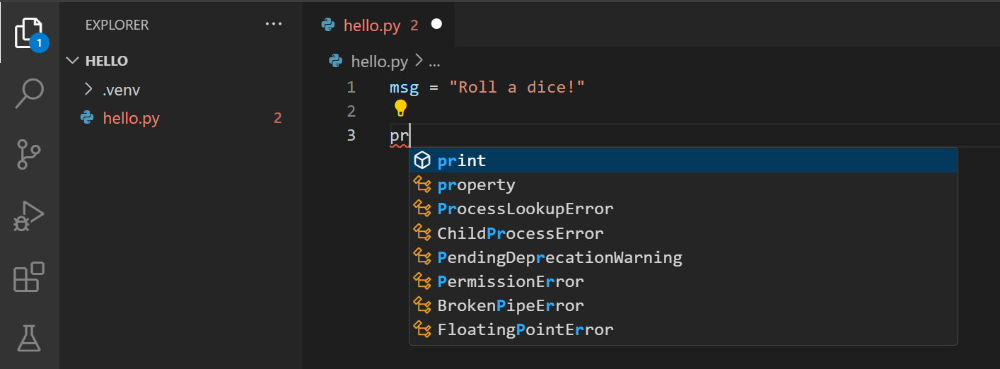
IntelliSense 和自动完成功能适用于标准 Python 模块以及你已安装到所选 Python 解释器环境中的其他包。它还提供对象类型上的可用方法补全。例如，因为 msg 变量包含一个字符串，当你输入 msg. 时，IntelliSense 会提供字符串方法：
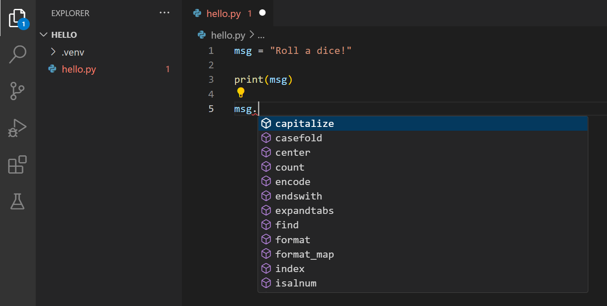
最后，保存文件（kb(workbench.action.files.save)）。此时，你已准备好在 VS Code 中运行你的第一个 Python 文件。
有关编辑、格式化和重构的完整详细信息，请参见编辑代码。Python 扩展还对 Linting 提供全面支持。
运行 Python 代码
点击编辑器右上角的运行 Python 文件播放按钮。
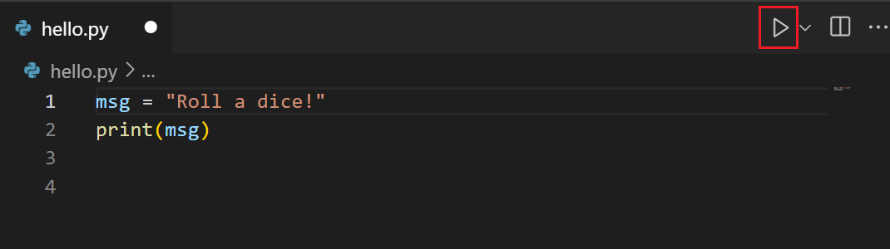
该按钮会打开一个终端面板，你的 Python 解释器会自动激活，然后运行 python3 hello.py（macOS/Linux）或 python hello.py（Windows）：
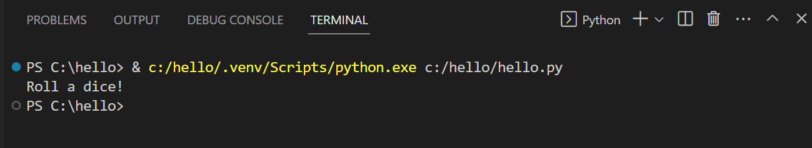
在 VS Code 中还有三种其他方式可以运行 Python 代码：
- 在编辑器窗口中的任意位置右键单击，选择运行 Python > 在终端中运行 Python 文件（会自动保存文件）：
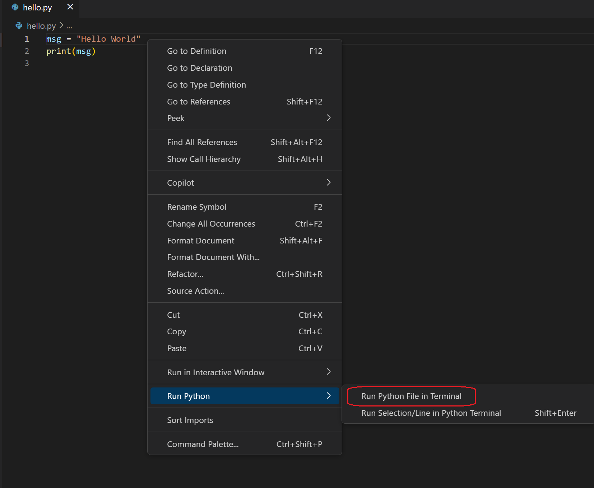
- 选择一行或多行，然后按
kbstyle(Shift+Enter)或右键单击并选择运行 Python > 在 Python 终端中运行所选内容/行。或者，你可以在没有选择内容的情况下使用kbstyle(Shift+Enter)激活智能发送，Python 扩展将把光标所在位置附近的最小可运行代码块发送到终端。该命令非常适合仅测试文件的一部分。注意：如果你希望发送光标所在的特定行代码，可以通过在用户设置中设置
python.REPL.enableREPLSmartSend : "false"来关闭智能发送。 - 从命令面板（
kb(workbench.action.showCommands)）中选择 Python: 启动终端 REPL 命令，为当前选择的 Python 解释器打开一个 REPL 终端（以>>>表示）。在 REPL 中，你可以一次输入并运行一行代码。
恭喜，你刚刚在 Visual Studio Code 中运行了你的第一个 Python 代码！
配置并运行调试器
现在让我们尝试调试我们的 Python 程序。调试支持由 Python 调试器扩展提供，该扩展会随 Python 扩展自动安装。要确保它已正确安装，请打开扩展视图（kb(workbench.view.extensions)）并搜索 @installed python debugger。你应该会在结果中看到 Python 调试器扩展。

接下来，在 hello.py 的第 2 行设置断点：将光标放在 print 调用上，然后按 kb(editor.debug.action.toggleBreakpoint)。或者，点击编辑器左侧行号旁的装订线区域。当你设置断点时，装订线中会出现一个红色圆圈。
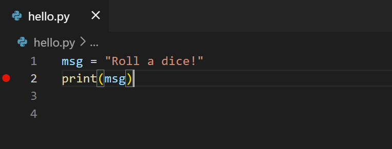
接下来，要初始化调试器，请按 kb(workbench.action.debug.start)。由于这是你第一次调试此文件，命令面板会打开一个配置菜单，允许你为打开的文件选择所需的调试配置类型。

注意：VS Code 使用 JSON 文件来存储其各种配置；launch.json 是包含调试配置的文件的默认名称。
选择 Python 文件，这是使用当前所选 Python 解释器运行编辑器中显示的当前文件的配置。
调试器将启动，然后停在文件断点的第一行。当前行在左边距中以黄色箭头指示。如果你此时检查局部变量窗口，你可以看到 msg 变量出现在局部变量窗格中。
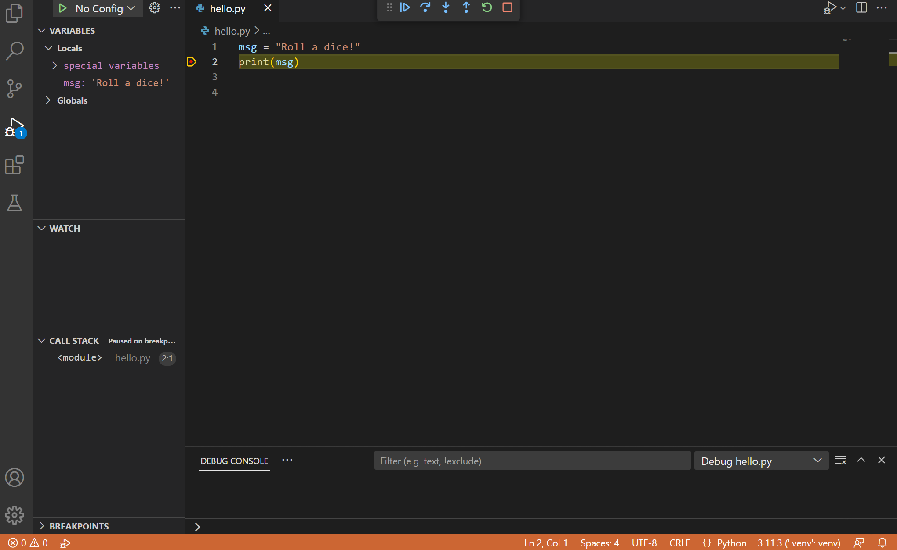
顶部会出现一个调试工具栏，从左到右依次提供以下命令：继续（kb(workbench.action.debug.start)）、逐过程（kb(workbench.action.debug.stepOver)）、逐语句（kb(workbench.action.debug.stepInto)）、跳出（kb(workbench.action.debug.stepOut)）、重启（kb(workbench.action.debug.restart)）和停止（kb(workbench.action.debug.stop)）。
状态栏也会改变颜色（在许多主题中为橙色），表示你处于调试模式。Python 调试控制台也会自动出现在右下方面板中，显示正在运行的命令以及程序输出。
要继续运行程序，请在调试工具栏上选择继续命令（kb(workbench.action.debug.start)）。调试器将程序运行到结束。
提示：调试信息也可以通过将鼠标悬停在代码上（如变量）来查看。对于msg，将鼠标悬停在变量上会在变量上方的一个框中显示字符串Roll a dice!。
你还可以在调试控制台中操作变量（如果你没有看到它，请在 VS Code 右下角区域选择调试控制台，或从 ... 菜单中选择它）。然后，在控制台底部的 > 提示符处，逐行输入以下代码：
msg
msg.capitalize()
msg.split()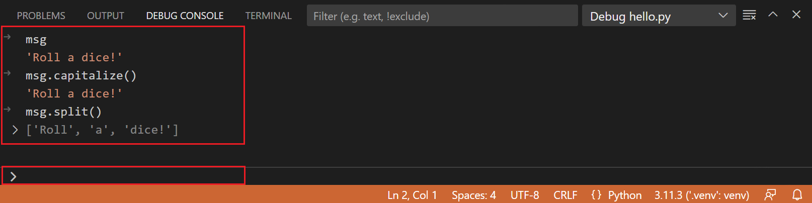
再次选择工具栏上的蓝色继续按钮（或按 kb(workbench.action.debug.continue)）将程序运行完成。如果你切换回Python 调试控制台，会看到"Roll a dice!"在其中显示，并且 VS Code 在程序完成后退出调试模式。
如果你重新启动调试器，调试器会再次停在第一个断点处。
要在程序完成之前停止运行程序，请使用调试工具栏上的红色方形停止按钮（kb(workbench.action.debug.stop)），或使用运行 > 停止调试菜单命令。
有关完整详细信息，请参见调试配置，其中包含如何使用特定 Python 解释器进行调试的说明。
提示：使用日志点替代 print 语句：开发人员经常在源代码中散布 print 语句来快速检查变量，而不必在调试器中逐行单步执行代码。在 VS Code 中，你可以改用日志点。日志点类似于断点，但它会将消息记录到控制台，而不会停止程序。有关更多信息，请参见 VS Code 主要调试文章中的日志点。
安装和使用包
让我们通过使用包来扩展之前的示例。
在 Python 中，包是你获取任意数量的有用代码库的方式，通常来自 PyPI，它们为你的程序提供额外的功能。在此示例中，你将使用 numpy 包来生成一个随机数。
返回到资源管理器视图（左侧最顶部的图标，显示文件），打开 hello.py，然后粘贴以下源代码：
import numpy as np
msg = "Roll a dice!"
print(msg)
print(np.random.randint(1,9))提示：如果你手动输入上述代码，可能会发现当你在行末按kbstyle(Enter)时，自动完成功能会更改as关键字后面的名称。为避免这种情况，先输入一个空格，然后再按kbstyle(Enter)。
接下来，使用上一节中描述的"Python: 当前文件"配置在调试器中运行该文件。
你应该会看到消息 "ModuleNotFoundError: No module named 'numpy'"。此消息表明所需的包在你的解释器中不可用。如果你使用的是 Anaconda 发行版或之前已安装 numpy 包，你可能不会看到此消息。
要安装 numpy 包，请停止调试器并使用以下方法之一：
选项 1：使用包管理界面
- 打开 Python 侧边栏，展开环境管理器
- 右键点击你的环境，选择管理包
- 搜索
numpy并选择安装
选项 2：使用终端
从命令面板运行终端: 创建新终端（kb(workbench.action.terminal.new)）。此命令会为你的选择解释器打开一个命令提示符。
要在虚拟环境中安装所需的包，请根据你的操作系统输入以下命令：
# 不要与 Anaconda 发行版一起使用，因为它们已经包含 matplotlib。
# macOS
python3 -m pip install numpy
# Windows（可能需要提权）
python -m pip install numpy
# Linux（Debian）
apt-get install python3-tk
python3 -m pip install numpy现在，重新运行程序，使用或不使用调试器，查看输出！
跨环境管理依赖项
在处理 Python 项目时，有效管理依赖项至关重要。一个实用的技巧是使用 pip freeze > requirements.txt 命令。此命令帮助你创建一个 requirements.txt 文件，列出虚拟环境中安装的所有包。然后可以使用此文件在其他地方重新创建相同的环境。
[!TIP]
当你使用 Python: 创建环境 或环境管理器视图中的 + 按钮创建新环境时，如果工作区中存在requirements.txt或pyproject.toml，扩展会自动检测并从中安装依赖项。
按照以下步骤创建 requirements.txt 文件：
- 激活你的虚拟环境（如果尚未激活）。
source venv/bin/activate # 在 macOS/Linux 上.\venv\Scripts\activate # 在 Windows 上 - 生成
requirements.txt文件。pip freeze > requirements.txt
你现在可以使用新生成的 requirements.txt 文件在另一个环境中安装依赖项。而且，随着项目的复杂度增加，你可以继续向其中添加依赖项。
pip install -r requirements.txt通过遵循这些步骤，你可以确保项目依赖项在不同环境中保持一致，从而使与他人协作和部署项目变得更加容易。
恭喜你完成了 Python 教程！在本教程的过程中，你学习了如何创建 Python 项目、创建虚拟环境、运行和调试你的 Python 代码，以及安装 Python 包。探索其他资源，了解如何在 Visual Studio Code 中充分利用 Python！
后续步骤
要学习如何使用流行的 Python Web 框架构建 Web 应用，请参见以下教程：
还有更多关于在 Visual Studio Code 中使用 Python 的内容值得探索：
- Python 配置文件模板 - 使用精选的扩展、设置和代码片段集合创建一个新的配置文件
- 编辑代码 - 了解 Python 的自动完成、IntelliSense、格式化和重构。
- Linting - 启用、配置和应用各种 Python Linter。
- 调试 - 学习本地和远程调试 Python。
- 测试 - 配置测试环境，发现、运行和调试测试。
- 设置参考 - 探索 VS Code 中与 Python 相关的全部设置。
- 将 Python 部署到 Azure 应用服务
- 将 Python 部署到容器应用